文字
背景
行間


校長花ごよみ
桜のある風景4（令和２年）
３月24日（火）今日は寒の戻りで非常に寒い朝になりましたが、天候は晴で澄んだ青空が広がっています。やはり桜の花は青空を背景にすると一段と映えますね。
今日の写真は、正門付近から地域交流棟回りと西門近辺から学思館脇のテニスコート周辺の桜の状況をお伝えします。


今日の写真は、正門付近から地域交流棟回りと西門近辺から学思館脇のテニスコート周辺の桜の状況をお伝えします。
桜のある風景3（令和2年）
3月23日（月）の朝は、あいにくと曇り空で時折、小雨がぱらついています。昨日は、東京など一部の場所では夏日を記録したようですが、春分の日からの3連休中の暖かさで、佐倉高校の桜も一気に開花しました。咲いている場所や桜の種類によって多少違いはあるものの見事に濃淡様々なさくら色の花を誇らしげに咲かせています。


桜のある風景2（令和2年）
一気に暖かな春の兆しが見え始めました。校内のソメイヨシノなどの桜の蕾が開花直前となってきました。遠目には木々の枝が赤く色付いているように見えます。
写真は、正門を入ってすぐに目に入る桜の木と駐輪場脇の桜の外観と蕾の様子です。


写真は、正門を入ってすぐに目に入る桜の木と駐輪場脇の桜の外観と蕾の様子です。
桜のある風景1（令和2年）
駐輪場とテニスコートの法面を隔てるフェンスに沿って植えてあるソメイヨシノの桜の蕾がかなり膨らんできました。今週から来週にかけて開花するものと思われます。また、記念館脇にあるシナミザクラはとても綺麗に咲いています。


台風の爪痕からの復旧
昨年の台風15号、19号や大雨による被害から半年が経とうとしていますが、未だ復旧できていないところも多いと思います。本校も、まだ多くの爪痕が残っていますが、年度末までに復旧に向けて整備を進めているところです。今日は、記念館の中央の最上部にある大塔の屋根の修理の為の足場が組まれました。また、第2グランドの防球ネットで外れていた部分を元に戻しました。更に、駐輪場とテニスコートの法面を分けるフェンスも土台から作り直していただいて新品のフェンスになりました。新年度には、きれいに整備された学校に戻ってこれると思います。


佐倉の桜その３～その１
(その３) 2月25日から国公立の第2次試験が多くの大学で行われています。佐倉高校では千葉県公立高等学校後期入学者選抜の願書受付日です。無事に試験や検査が行われることを願います。
学思館横の河津桜は7分咲きで道路からも鑑賞できるほど程良く咲いていてとても綺麗です。（写真）
→（その２）2月19日、(その１) ２月17日の状況は写真下の ＞＞続きを読む をクリック


学思館横の河津桜は7分咲きで道路からも鑑賞できるほど程良く咲いていてとても綺麗です。（写真）
→（その２）2月19日、(その１) ２月17日の状況は写真下の ＞＞続きを読む をクリック
(その２) ２月19日は公立高校の前期選抜の結果発表日でした。天候に恵まれ穏やかで、日差しが暖かい日でした。
学思館横の河津桜は三分咲きといったところです。


(その１) ２月17日は学思館の横の河津桜が咲き始めたのでお知らせします。多くの蕾が濃いピンクに色づき膨らんでいます。このところの暖かい気候に促されて咲く準備が一気に整って来たようです。受験生の皆さんにも良い知らせが届くことを期待しています。

学思館横の河津桜は三分咲きといったところです。
(その１) ２月17日は学思館の横の河津桜が咲き始めたのでお知らせします。多くの蕾が濃いピンクに色づき膨らんでいます。このところの暖かい気候に促されて咲く準備が一気に整って来たようです。受験生の皆さんにも良い知らせが届くことを期待しています。
立春大吉（庚子）
本日（令和2年2月4日）は立春です。暦の上では春です。立春を始めとする二十四節気の節気は、太陽の角度や動きにより、天文学的に決められています。太陽黄経が315度になった日が立春です。とは言え、この時期は1年でももっとも寒い時期でもあります。通勤途中の朝の冷え込みは厳しく暖冬の今年でも久しぶりに氷点下でした。そんななか、桜の蕾の様子を見ると春の訪れに向けて着実に準備が進んでいることを感じます。受験生の皆さん春はすぐそこです、頑張ってください。
（写真 左：山茶花と河津桜の蕾 右：校長室で開花した河津桜）
 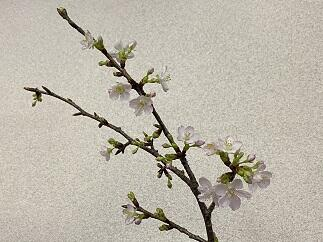
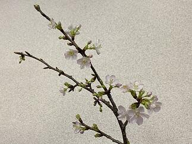
（写真 左：山茶花と河津桜の蕾 右：校長室で開花した河津桜）
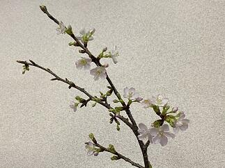 節分（庚子）
 本日は、節分です。節分の日には、一年の厄を払うために「豆まき」を行うのが最も一般的ですが、令和に入って初めての節分ですから、ニュースによると各地とも例年にもまして、多くの神社仏閣で有名人等による「豆まき」が行われたそうです。私が小学生ごろはどこの家でも豆まきが行われていたように思います。「福は内、鬼は外」という元気な声がここかしこで響いていました。
本日は、節分です。節分の日には、一年の厄を払うために「豆まき」を行うのが最も一般的ですが、令和に入って初めての節分ですから、ニュースによると各地とも例年にもまして、多くの神社仏閣で有名人等による「豆まき」が行われたそうです。私が小学生ごろはどこの家でも豆まきが行われていたように思います。「福は内、鬼は外」という元気な声がここかしこで響いていました。最近は、豆まきと併せて、恵方巻き（太巻き）をその年の恵方（方角）に向いて丸かぶりする風習も全国的に行われていますが、今年は庚の年なので,恵方（めぐみのかた）は西南西です。皆さんの健康と益々のご活躍を祈念いたします。
受験生の皆さん頑張ってください。
第30回千葉県アンサンブルコンテストの様子と第10回定期演奏会へのご案内
今日1月26日（日）は第30回千葉県合唱アンサンブルコンテストの高等学校の部が千葉市民会館大ホールを会場にして開催されました。高等学校の部は38校がそれぞれが独自の編成でバラエティに富んだ選曲で演奏していました。本校の音楽部の演奏は無伴奏女声合唱曲集「なみだうた」より序 竹久夢二詩、１．涙 林芙美子詩、３．なみだ 松本可奈子詩、４．なみだうた 谷川俊太郎詩 すべて信長貴富曲でした。その澄んだ歌声が会場に響き渡っていました。とても感動的で素晴らしい演奏でした。
さて、この音楽部の素晴らしい演奏をお聞きになりたい方は、佐倉高校音楽部の第10回定期演奏会が来る3月29日（日）に佐倉市民音楽ホールで13：00開場 13：30開演で開催予定です。皆様お誘いの上お越しください。（写真 右パンフ）
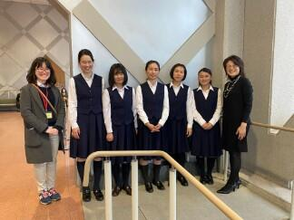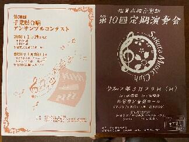
さて、この音楽部の素晴らしい演奏をお聞きになりたい方は、佐倉高校音楽部の第10回定期演奏会が来る3月29日（日）に佐倉市民音楽ホールで13：00開場 13：30開演で開催予定です。皆様お誘いの上お越しください。（写真 右パンフ）
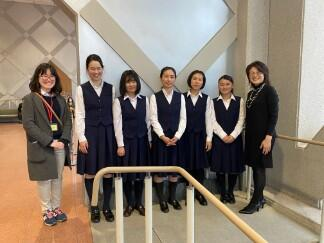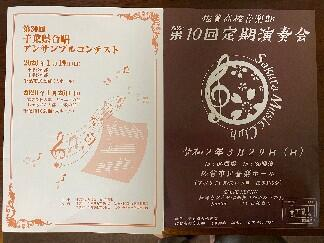
令和2年初登校
今日令和2年1月7日（火）は生徒にとって年明け初めての登校となりました。今年に入って穏やかな日が続いています。1月から3月は受験や大切な行事が続くのでこれらに関係した日が同様に穏やかな日になってくれることを祈ります。さて、昨年、約半年間ほどかけて行われた本館の外壁工事も無事終了し本館の外観がとてもきれいになりました。（写真）工事期間中は台風などの多くの自然災害が発生するなか無事に工事を終えていただき感謝いたします。お陰様で、今年は年始めからきれいな校舎で、校舎を囲んでいた工事用の足場も無くなったので、生徒や教職員の校舎間での移動時の動線もいつも通りに戻った環境で授業が開始できて本当にありがたいです。あらためまして、すべての関係者の皆様に感謝申し上げます。


合格祈願（湯島天満宮）
元日、２日ともそれほど寒くもなく初詣には良い日和になりました。私は初詣では昨日に続いて天神様巡りをしています。そこで佐倉高校の皆さんの学業成就と合格祈願をお願いしています。今日は、東京の湯島天満宮（湯島天神）にお参りしてきました。さすがに多くの受験生の参拝者で賑わっていました。受験生の皆さんは、本番で力を発揮できるように健康に気をつけてコンディションを整えていきましょう。応援しています。


謹賀新年 令和２年（庚子）元旦
明けましておめでとうございます。令和２年元旦です。今年の干支（十干・十二支）は「庚 子（かのえ ね）」です。「子」は十二支の一番目にあたる干支です。「子」の字は、種の中に生命が芽吹き始めた様子を表していて、また、十干の金の陽を表す「庚」は新たな状態への変化を意味していますので、「庚子」の本年は、新しく物事を始める人や、目標に向かってこれまで努力してきた人の背中を後押ししてくれる年回りとなるそうです。皆で健康に気をつけながら目標達成に向けて努力して良い年にしていきましょう。今年もよろしくお願いします。


第4回考査が始まりました。
今日（12月3日）から４日間の日程で第４回の定期考査が始まりました。昨日は12月としては記録的な大雨で一時的に10月25日の豪雨を思い出しましたが、今日はとても穏やかな天候となって良かったです。皆で気をつけて風邪やインフルエンザなどに罹らぬように手洗いの励行やマスクの着用で予防していきましょう。また、インフルエンザの予防接種は接種後２週間で効力を発揮しはじめ５か月間有効とのことです。（ちなみに私は既に接種済みなので年度末までは大丈夫かな）皆で健康に気をつけていきましょう。


記念館一般公開日に思う
今日（11月23日）は、13:00から16:00の間、時間限定で記念館を一般公開する日です。天候は雨ですが、これはこれで雨に淡く光る紅葉にも格別の趣を感じられるのではないでしょうか。
今も現役で活躍する記念館。ここに一歩足を踏み入れると、創立以来多くの有為な人材を世に送り続けてきた伝統校の学びの場としての凜とした空気を感じられることでしょう。と同時にここで脈々と育まれてきた温かさと何ともいえぬ懐かしさを感じることができるでしょう。そんな記念館だからこそ、伝統が形になって時代を超えて愛し続けられているのだと思います。


今も現役で活躍する記念館。ここに一歩足を踏み入れると、創立以来多くの有為な人材を世に送り続けてきた伝統校の学びの場としての凜とした空気を感じられることでしょう。と同時にここで脈々と育まれてきた温かさと何ともいえぬ懐かしさを感じることができるでしょう。そんな記念館だからこそ、伝統が形になって時代を超えて愛し続けられているのだと思います。
多くの方々の御来場を頂きありがとうございます。


紅葉の季節２
朝晩の冷え込みがかなりきつくなってきました。風邪やインフルエンザに係りやすい時期ですから、手洗いの励行と身体を冷やさないようにして体調管理に気をつけましょう。記念館や東郷池の周りの木々も色とりどりの葉をつけてとても美しい景色を演出してくれています。
さて、今週は先生方が互いに授業を見合い、より良い授業実践を目指して研究実践に取り組む授業練磨の週間です。この時期に多くの研究授業も行われています。昨日行われた授業公開については、保護者や近隣の先生方多くに方々に参観いただきありがとうございました。
→11月27日の様子は続きを読むをクリック
さて、今週は先生方が互いに授業を見合い、より良い授業実践を目指して研究実践に取り組む授業練磨の週間です。この時期に多くの研究授業も行われています。昨日行われた授業公開については、保護者や近隣の先生方多くに方々に参観いただきありがとうございました。
→11月27日の様子は続きを読むをクリック
このところ気温は低く雨ばかりです。体調を崩す人も増えてきていまので気をつけていきましょう。今日の紅葉の様子です。（11月27日）

修学旅行最終日その５（感謝）
予定通り帰りの新幹線JR京都駅13：48発のぞみ228号に乗車しました。予定では１６：０３には東京駅につく予定です。
>> 無事予定通り東京駅に着きました。ありがとうございました。生徒はそれぞれ帰宅の途につきました。
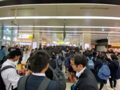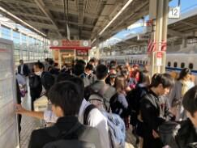
>> 無事予定通り東京駅に着きました。ありがとうございました。生徒はそれぞれ帰宅の途につきました。
(16:15時点)
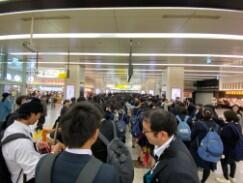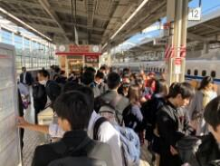
帰りの新幹線はとても早く感じられるのはなぜでしょうか。ほんとに楽しい時間は夢のようjに過ぎて行きます。それでも、今回の旅の経験は、きっと素晴らしい思い出としてそれぞれの記憶に残ることと思います。４日間おつかれ様でした。また、楽しい思い出とその時々に皆さんと一緒に感じられた感動をありがとうございました。
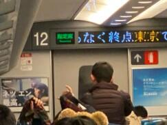
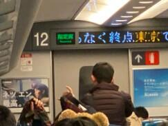
＜関係者の皆様に感謝！＞
お陰様で、４日間の修学旅行を無事に終了することができました。旅行中たいへんお世話になった近畿日本ツーリストの盛永さん、村岡さん、村越さん、新井さん、学校写真の太田さん 本当にありがとうございました。併せて、保護者の皆さん、佐倉高校の教職員の皆さんありがとうございました。修学旅行最終日その４
昼食はホテルでバイキングです。
私はA,D，E，F組とリーガロイヤルホテルでした。料理がとても充実していてとても美味しかったです。いよいよ京都駅に移動です。
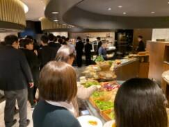

私はA,D，E，F組とリーガロイヤルホテルでした。料理がとても充実していてとても美味しかったです。いよいよ京都駅に移動です。
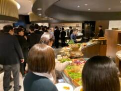
修学旅行最終日その３

 最初の訪問先の仁和寺に行ってきました。御室桜が紅葉していました。
最初の訪問先の仁和寺に行ってきました。御室桜が紅葉していました。この後は、組紐体験に向かいます。
組紐体験楽しかったです。
 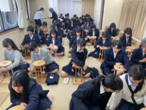
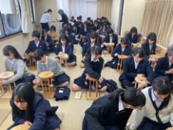
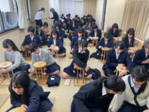 修学旅行最終日その２
今日は、クラス別コースで活動します。出発前にクラス別の集合写真を撮ってからバスで移動します。天気は雲ひとつない快晴です。私はD組と仁和寺に向かいます。

修学旅行最終日その１
今日11月15日はいよいよ修学旅行の最終日となりました。
6：00起床、6：30に朝食です。その後、大きな荷物は宅配便で送ります。


最後まで息を抜かずに安全に留意して最終日を満喫したいと思います。
6：00起床、6：30に朝食です。その後、大きな荷物は宅配便で送ります。
最後まで息を抜かずに安全に留意して最終日を満喫したいと思います。
修学旅行第３日その５
夕食後に修学旅行委員（写真左）と文集係（写真右）の人たちの集合写真の撮影がされました。まずは、これまでの働きに対し感謝申し上げますととも、これからも最高の修学旅行になるようまた、作成する文集が心に残る素晴らしいものとなりますように、最後まで、みんなで協力して頑張っていきましょう。
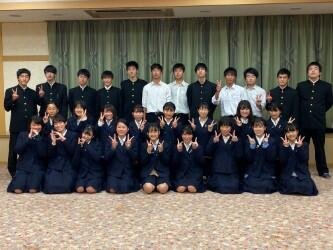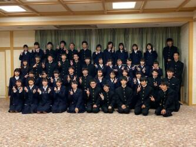
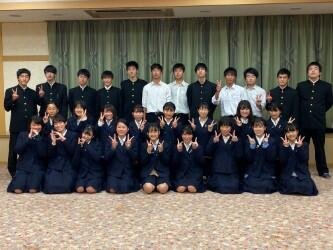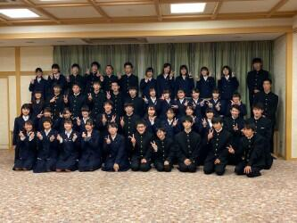
修学旅行第３日その４
一日の班別活動を終えて皆無事に帰ってきました。この２日間は不慣れな土地での散策活動でしたのでかなり疲れたと思います。帰ってきたときの明るい充実した表情からは仲間と協力していい旅ができたようです。このあと18：00から夕食です。
 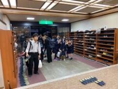
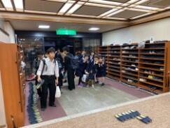 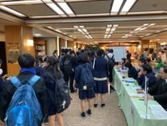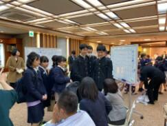
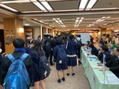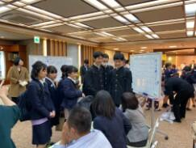
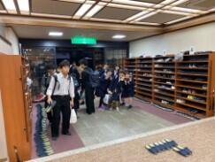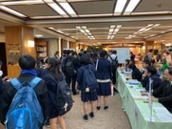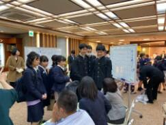
今日の夕食はすき焼きです。
 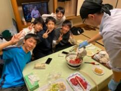
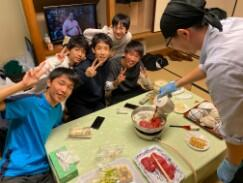
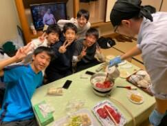 修学旅行第３日その３
本日のチェックポイントは、南禅寺、龍安寺、天龍寺、二条城、東寺でした。どのポイントも予定時間内に通過できました。天気も雲は多いものの良い天気になりました。（写真は聖護院門跡と聖護院とその石庭（修行場））
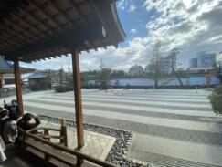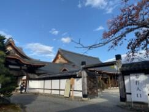
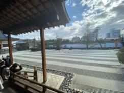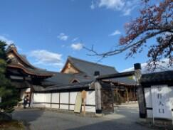
修学旅行第３日その２
朝食後、先生方の集合写真を撮ったり、保津川下りに行く班は早めに出発したり、着付けをして出かける班など、三々五々の出発風景となりました。元気に明るく出かけていきました。天気も徐々によくなってきています。
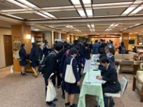

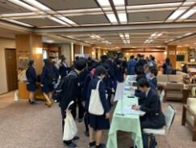
修学旅行第３日その１
今日11月14日5：30の段階では昨夜からの雨は小雨が降ったり止んだりという状況です。バスケット部の男子が朝練で平安神宮周辺をランニングしました。


朝食の様子


修学旅行第２日その４
夕食後19：00から希望者は夜間拝観へ出発しました。将軍塚、青蓮院、永観堂、高台寺のうち希望する場所へバスで移動しました。私は、今年は永観堂へ行きました。拝観した全員が予定通り帰って来て、２日目の活動もすべて無事に終了しました。明日の班別活動も思い出に残るすばらしいものにできるように頑張って参ります。（写真は永観堂での拝観の様子）


修学旅行第２日その３
生徒が本日の班別活動を終え、宿舎である聖護院御殿荘へ全員無事に帰って来ました。この後、18：00から部屋ごとに夕食です。

 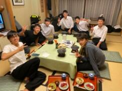
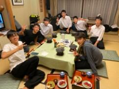
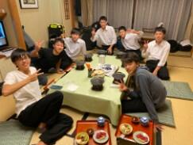修学旅行第２日その２
各班とも判別活動の出発地に合わせ、宇治平等院方面3台、奈良公園（橿原神宮方面）方面3台、薬師寺方面2台のバスに分乗して移動します。私は、奈良公園方面に移動します。


興福寺の五重塔前でのチェックポイントの様子 時間に余裕を持ってチェックポイントを通ってくれました。この後も気をつけて行ってらっしゃい！


修学旅行第２日その１
6：00起床、吉野の朝は、かなり寒いです。それでも、生徒は元気です。7：00朝食 今日は班別行動なので。大きな荷物は別便で御殿荘に別便で送り、それぞれの出発地となる場所に方面別にバスに分乗して移動します。朝の天気は晴れ、夕方おそくなると雨の心配がありますが、今日も元気に行ってきます。（写真は群芳園からの朝の景色）

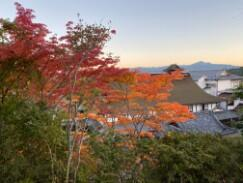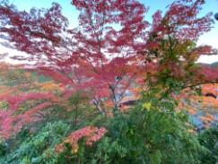
今日の朝食風景


修学旅行第１日その４
竹林院群芳園は世界遺産に登録された桜の名所吉野山の上千本エリアにあります。竹林院の庭園「群芳園」は、大和三代庭園の一つです。竹林院は、そもそも聖徳太子建立の一寺と伝えられ、宿坊として、豊臣秀吉、与謝野晶子はじめ、多くの文人墨客の宿として愛されきたそうです。館内にある書画も然り、来るたびにその奥深い魅力を感じることができる宿です。今日の夕食はみんなで大広間に集まって利休鍋を中心においしく楽しくいただき心も体も温まりました。ごま豆腐やわらび餅も美味しかったです。


修学旅行第１日その３
列車を降りてからはクラス別にバスで移動です。C,E組は伊賀上野コース、D組は山の辺の道コース、A組は飛鳥古代史コース、B組は、東大寺奈良公園コース、G組は、法隆寺薬師寺コースで、私は、F、H組と共に赤目四十八滝散策コースへ。赤目四十八滝は一級河川の滝川に流れ込む一連の滝郡で滝川の水がとにかく清く澄んでいてきれいでした。また、周辺の山の一部ですが紅葉がとてもきれいでした。前日に雨や雹が降ったそうですが今日は朝から好天に恵まれ、空気は多少冷えていましたがとても澄んでいて気持ち良かったです。スケジュール通り進んでいてこれからバスで本日の宿舎である竹林院群芳園に向かいます。


修学旅行第１日その２
名古屋からは近鉄臨時特急（専用車）でクラスごとの目的地である三重県や奈良県に向かいます。


昼食は車内でおいしいお弁当を食べました。車窓からの風景も楽しめました。


修学旅行第１日その１
今日（11月12日）から３泊４日の修学旅行が始まりました。おかげさまで、天候に恵まれ第１日目は順調な滑りだしとなりました。元気に楽しく安全で有意義な旅行になるように頑張ってまいります。お見送りに来ていただいた奥村先生ありがとうございました。
 集合は新幹線ホームです。新幹線で中継駅の名古屋へ向かいます。
集合は新幹線ホームです。新幹線で中継駅の名古屋へ向かいます。
集合は新幹線ホームです。新幹線で中継駅の名古屋へ向かいます。紅葉の季節


 11月9日（土）に120周年記念式典を無事挙行できましたことに対して、皆様に厚く御礼申し上げます。今日は、その式辞のなかで紹介させていただいた東郷池周りの木々の葉が色づき始めた様子をお見せしたいと思います。
11月9日（土）に120周年記念式典を無事挙行できましたことに対して、皆様に厚く御礼申し上げます。今日は、その式辞のなかで紹介させていただいた東郷池周りの木々の葉が色づき始めた様子をお見せしたいと思います。 東郷池復旧状況No.3
県内各地では、まだ台風15号、19号による被害からの回復が、ままならない状況にも関わらず先週金曜日（10月25日）の記録的豪雨によりまた、多くの被害を受けることとなりました。被害に遭われたすべての皆様へお見舞いを申し上げますとともに、一日も早い復旧と落ち着いた日常に戻れますことを祈念いたします。
台風15号で東郷池に直接倒れた檜を含む池周辺の倒木4本を本日（10月28日）やっと、業者の方に撤去していただくことができましたのでお知らせします。（写真 上段から下段左まで撤去の様子 下段中央、右は倒木撤去後の東郷池）


台風15号で東郷池に直接倒れた檜を含む池周辺の倒木4本を本日（10月28日）やっと、業者の方に撤去していただくことができましたのでお知らせします。（写真 上段から下段左まで撤去の様子 下段中央、右は倒木撤去後の東郷池）
ダンス同好会ハローウィンパフォーマンス
今日（10月24日）の昼休みにダンス同好会によるハローウィンパフォーマンスが行われました。通常であれば、公演場所は、中庭だったのですが、校舎の外壁工事中のため今回は第１体育館での公演となりました。練習も工事のため場所の確保がたいへんだったと思います。それでも、多くの生徒、先生が見守るなか日頃の練習の成果を存分に発揮していたと思います。明るく切れのあるダンスパフォーマンスありがとうございました。
 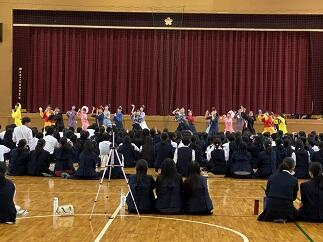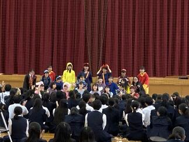
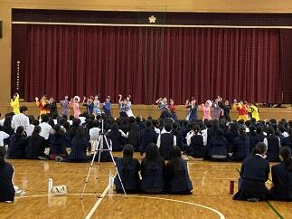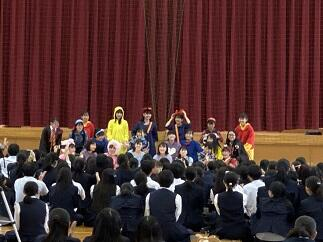
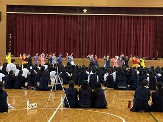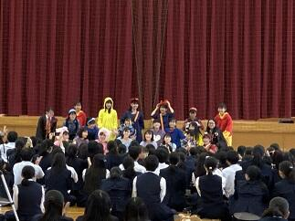 台風一過
観測史上最強の台風19号が昨日10月12日から今日13日にかけて日本各地で猛威を振い、たいへんな被害が出ています。まずは、被災された皆様に心よりお見舞い申し上げます。昨日、佐倉市全域にレベル４の避難勧告が出されました。第一体育館を佐倉市の避難所として昨日の午前10時から開設していました。本校には28名の方々が避難されていました。本校を利用されていた方々は午前6時30分ころには皆さん御自宅にお戻りになられました。佐倉市では、本日午前8時に避難勧告を解除し併せて市内すべての避難所を閉鎖しました。
学校の被害状況ですが、本校の周辺では昨日の23時50分ごろには風雨がおさまりはじめ台風15号に比べて被害は格段に少なくてすみました。写真は何事も無かったような青空の朝の風景。


 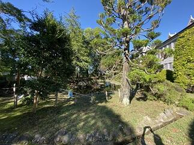
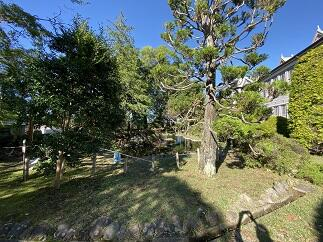
学校の被害状況ですが、本校の周辺では昨日の23時50分ごろには風雨がおさまりはじめ台風15号に比べて被害は格段に少なくてすみました。写真は何事も無かったような青空の朝の風景。
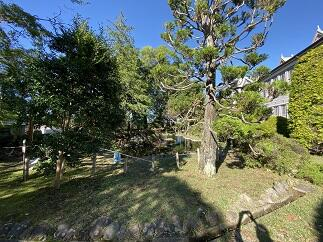 いきいき茨城ゆめ国体カヌースプリント200m競技
今日10月６日（日）は第74回国民体育大会カヌースプリント競技の200ｍの全種目の準決勝までの試合が予定されていましたが、台風並みのの強風のため全種目の予選のみ行って終了しました。明日、200ｍの準決勝と決勝を行うことになりました。明日の天候が良くなることを祈ります。→10月7日の様子は >>続きを読む をクリック
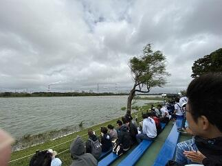 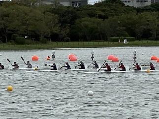
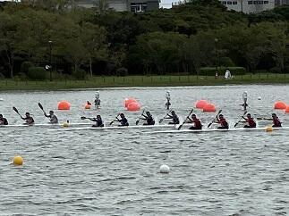
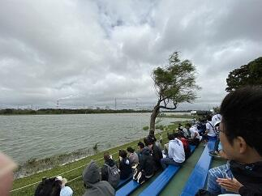
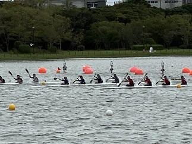
今日10月7日（月）は第74回国民体育大会カヌースプリント競技の200ｍの全種目の準決勝と決勝が行われました。あいにく天候は、昨日ほど風は酷くなかったものの北西の風がコースを進む選手に対して右斜め前方から吹いてくる状況が続いていて、時折雨も強く降る中で、競技が行われました。500ｍに続いて決勝には一歩及びませんでしたが、最後の一漕ぎまで力を出し切ってくれたと思います。大会全体を通して、天候に恵まれませんでしたが、素晴らしい全国の選手達とともに競った試合経験は選手の皆さんの宝であり、今後の糧となることでしょう。本当にお疲れ様でした。そしてありがとうございました。また、応援に来ていただいた保護者の皆様や千葉県教育庁の体育課の方々、本当にありがとうございました。


いきいき茨城ゆめ国体カヌースプリント500m競技
現在、第74回国民体育大会が、茨城県の各地を会場に開催されています。カヌースプリント競技については10月４日（金）から10月７日（月）の４日間で神栖市の神之池特設カヌー競技場で開催されています。昨日は強風の影響で予定していたすべての競技が今日に延期になりました。そのため今日10月５日（土）だけで、予選から決勝までの500ｍのすべての競技を行いました。本校からは少年男子のC1とK4の２種目に出場しました。惜しくも決勝までは、あと一歩でしたが、すばらしい試合をしてくれました。目標をクリアするため日々の練習の方法や試合に臨む気持ちの高め方、自分や友人を信じる強い気持ちの作り方など、全国での最高の檜舞台を踏むことができた選手は、また一段と大きく成長したと思います。応援に来ていたカヌー部員たちも、とても良い刺激を受けて明日からの練習に励めると思います。選手の皆さん本当にありがとうございました。明日、明後日は200ｍの競技も楽しんでください。そして、自分と仲間の力を信じて持てる力を存分に発揮して欲しいと思います。また、保護者の皆さんいつも応援ありがとうございます。
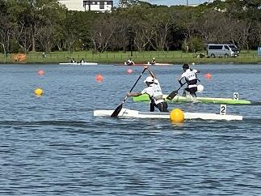
 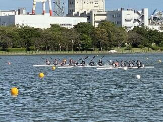
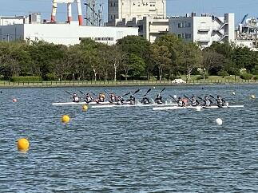

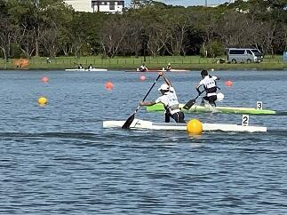
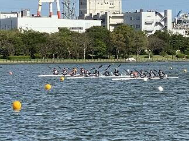 朝霧の風景
今日10月2日（水）の朝は霧が深く、視界が50ｍ位でした。天気予報では日中は気温が30℃に達するということで昨日に引き続き10月としては異例の真夏日の暑さが続きそうです。そんななか、弓道部が、匝瑳高校での練習に向けて元気にバスで出発しました。頑張ってください。


東郷池の復旧状況No.2
10月1日（火）は、3日間の秋休みの初日です。午前中は、学思館で救急救命の講習会が行われています。ブリティッシュヒルズの英語研修は2日目で、SSHの国内サイエンスツアーは今日初日です。東郷池の倒木の処理も少しづつ成果が出てきました。


東郷池の復旧状況No.1
台風15号による影響で倒木により悲惨な状況であった東郷池も古川さん、友信さん、渡辺さんのご協力で少しづつ復旧に向けて進んでいます。大きな倒木は専門業者さんにお願いしないと撤去はできませんが、少しづつでも2次被害が出ないように自分たちでできる範囲で作業を進めていて、お陰様で大分見通しが良くなってきました。
被災直後の様子は→台風15号の爪痕


被災直後の様子は→台風15号の爪痕
今日９月30日（月）は前期最後の日です。生徒は明日から３日間秋休みです。この間を利用してブリティッシュヒルズの英語研修やSSH国内サイエンスツアーなどが行われます。学校は後期の準備や台風の被害からの復旧を継続して行います。写真は今日の東郷池の復旧状況です。できることを一歩一歩着実に進めています。


関東高等学校カヌー選手権選抜大会第２日 祝！男子総合優勝
 大会2日目はすべての競技の決勝が行われます。天候は曇りのままで持ちそうです。
大会2日目はすべての競技の決勝が行われます。天候は曇りのままで持ちそうです。気温は現在14℃ですが、19℃くらいには上がりそうです。湖面は落ち着いた状態でこのまま良いコンディションで試合が行えることを望みます。（7:00時点）
<左の写真は朝の精進湖周辺と練習風景>
→続きは ≫続きを読む 祝！関東大会男子総合優勝 をクリックしてください！
お陰様で決勝にはとても良いコンディションで試合ができました。どの競技においても本校の選手は目標をしっかりと持って試合に臨みその持てる力を十二分に発揮しました。特に本校の強みであるフォア競技では女子カヤックフォアでは２位、男子はカナディアンフォアとカヤックフォアで１位などすばらしい結果でした。その結果として、男子は学校別対抗で総合優勝、女子は総合３位になりました。今まで自分や仲間を信じて顧問の先生方とともに日々頑張って来た結果が表れたと思います。おめでとうございます。今回の試合で得た多くの貴重な経験や思いはそれぞれが、次の目標に向けて努力する良い機会になったと思います。
また、マネージャーの中沢さんは本校の選手だけでなく配艇係として大会のスムーズな運営も完璧に支えてくれました。本当にありがとうございました。
そして、今日も応援に来ていただいた保護者やご家族の皆様ありがとうございました。

 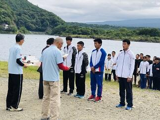
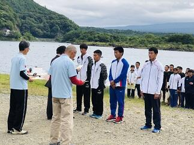＜写真左 富士山を前に円陣組む選手たち＞＜写真中央 WK4決勝の様子＞＜写真右 閉会式 男子総合の表彰＞
 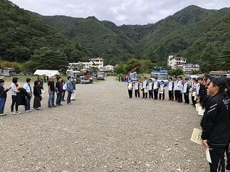
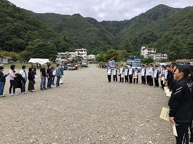
＜写真左 優勝カップと喜びの選手たち＞＜写真中央 保護者の方々への感謝＞＜写真右 菅澤先生から部員へのアドバイス＞
令和元年度関東高等学校カヌー選手権選抜大会第１日
9月21日（土）、22日（日）の2日間で令和元年度関東高等学校カヌー選手権選抜大会が山梨県南都留郡富士河口湖精進湖カヌー競技場で開催されます。第1日目の今日は、すべての競技の準決勝までの試合が行われました。朝から天気は曇りで天気予報では、雨が降ったり止んだりということでしたが、試合開始前にちょっとだけ降っただけで何とか持ちました。ただ、気温は15℃位でとても寒い一日でした。本校の選手諸君は開会式の後、いつもどおり円陣を組んで試合に臨みました。それぞれ、自分の設定した目標に向かって良いチャレンジができたと思います。明日行われるすべての競技の決勝に進出することができました。明日も目標に向かって良い試合ができることを期待します。今日も応援に来てくださった保護者やご家族の皆さんありがとうございました。明日も応援よろしくお願いします。
 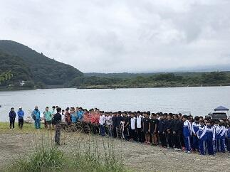
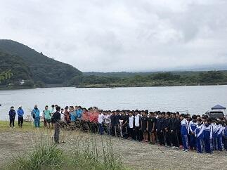
＜写真左 朝の精進湖周辺の様子と練習風景＞＜写真中央 開会式の様子＞＜写真右 円陣を作って気持ちを一つにする選手たち＞
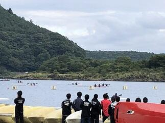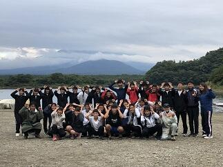
＜写真左 wk2準決勝のレースと応援風景＞＜写真中央 選手とともに記念撮影＞＜写真右 保護者の方々と選手たち＞
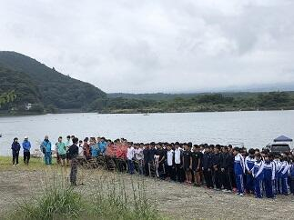＜写真左 朝の精進湖周辺の様子と練習風景＞＜写真中央 開会式の様子＞＜写真右 円陣を作って気持ちを一つにする選手たち＞
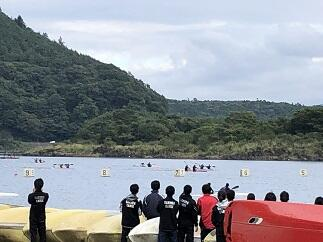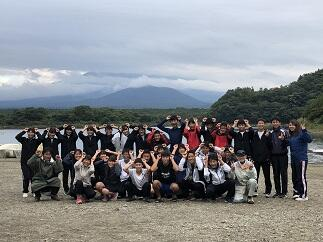
＜写真左 wk2準決勝のレースと応援風景＞＜写真中央 選手とともに記念撮影＞＜写真右 保護者の方々と選手たち＞
早朝の風景
 今日9月10日は、朝の段階では、一部電車に運休や遅延が発生していて停電も復旧していない地区では信号が消えているところがたくさんあります。通勤通学の方は決して無理をしないようにお願いします。台風15号の爪痕が残る学校でも少しづつ復旧作業を行っているところです。そんななか、いつものように早朝から剣道部の皆さんが落葉や枝を掃除してくれていました。本当にいつもありがとう。感謝、感謝です。
今日9月10日は、朝の段階では、一部電車に運休や遅延が発生していて停電も復旧していない地区では信号が消えているところがたくさんあります。通勤通学の方は決して無理をしないようにお願いします。台風15号の爪痕が残る学校でも少しづつ復旧作業を行っているところです。そんななか、いつものように早朝から剣道部の皆さんが落葉や枝を掃除してくれていました。本当にいつもありがとう。感謝、感謝です。 台風15号の爪痕
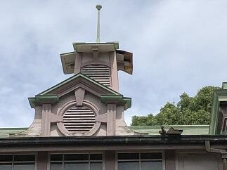
 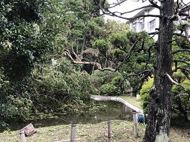
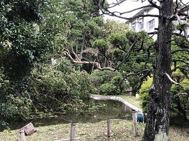
 本日9月9日(月)未明にかけて暴風雨を伴って県内を直撃した台風15号は、東京湾を北上し朝5時頃に千葉市付近に上陸しました。千葉市では最大瞬間風速57.5ｍを観測し県内での観測史上最大を更新したそうです。この影響で県内では広く停電が発生しました。今現在も、停電が続いているなど暴風雨での多くの被害が千葉県の各地で報告されています。天気が回復した後の塩害も心配です。被災された方々には心からお見舞い申しあげると共に 復旧にご尽力されている皆様には感謝を申し上げるとともに安全に留意され一日も早く作業の終えられることをお祈りいたします。
本日9月9日(月)未明にかけて暴風雨を伴って県内を直撃した台風15号は、東京湾を北上し朝5時頃に千葉市付近に上陸しました。千葉市では最大瞬間風速57.5ｍを観測し県内での観測史上最大を更新したそうです。この影響で県内では広く停電が発生しました。今現在も、停電が続いているなど暴風雨での多くの被害が千葉県の各地で報告されています。天気が回復した後の塩害も心配です。被災された方々には心からお見舞い申しあげると共に 復旧にご尽力されている皆様には感謝を申し上げるとともに安全に留意され一日も早く作業の終えられることをお祈りいたします。
今日は各社とも計画的に始発電車から運休しており、移動の主体は自家用車やバスなどの自動車となった訳です。それなのに今日の道路状況は普段と違い、高速道路は全面通行禁止で、一般道では信号機のほとんどが消えており、冠水して車が何台も浸かっていたり、電柱が折れていたり、倒木で道を塞いでいたりと走れる道路を探すのが一苦労でした。また、やっと走れる道を見つけても大渋滞と運転するのにとっても疲れました。学校に通勤するのに4時間かかりました。学校に着いて校舎施設や樹木などの被害状況を確認すると今回の台風のすごさを改めて実感しました。その一部ですが東郷池周辺の倒木(3本の檜、内2本は東郷池の中に枝を入れて倒れている)と記念館の屋根(中央タワーの屋根の支え板が破損)の被害状況をお知らせします。本当にこの光景を見た時は、いつも見慣れた風景がそこには無く、ショックを隠しきれませんでした。
→ 池の鯉の様子は ≫続きを読む 東郷池の鯉 をクリックしてください。
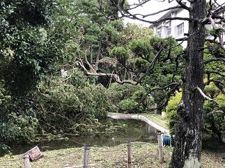本日9月9日(月)未明にかけて暴風雨を伴って県内を直撃した台風15号は、東京湾を北上し朝5時頃に千葉市付近に上陸しました。千葉市では最大瞬間風速57.5ｍを観測し県内での観測史上最大を更新したそうです。この影響で県内では広く停電が発生しました。今現在も、停電が続いているなど暴風雨での多くの被害が千葉県の各地で報告されています。天気が回復した後の塩害も心配です。被災された方々には心からお見舞い申しあげると共に 復旧にご尽力されている皆様には感謝を申し上げるとともに安全に留意され一日も早く作業の終えられることをお祈りいたします。今日は各社とも計画的に始発電車から運休しており、移動の主体は自家用車やバスなどの自動車となった訳です。それなのに今日の道路状況は普段と違い、高速道路は全面通行禁止で、一般道では信号機のほとんどが消えており、冠水して車が何台も浸かっていたり、電柱が折れていたり、倒木で道を塞いでいたりと走れる道路を探すのが一苦労でした。また、やっと走れる道を見つけても大渋滞と運転するのにとっても疲れました。学校に通勤するのに4時間かかりました。学校に着いて校舎施設や樹木などの被害状況を確認すると今回の台風のすごさを改めて実感しました。その一部ですが東郷池周辺の倒木(3本の檜、内2本は東郷池の中に枝を入れて倒れている)と記念館の屋根(中央タワーの屋根の支え板が破損)の被害状況をお知らせします。本当にこの光景を見た時は、いつも見慣れた風景がそこには無く、ショックを隠しきれませんでした。
→ 池の鯉の様子は ≫続きを読む 東郷池の鯉 をクリックしてください。
 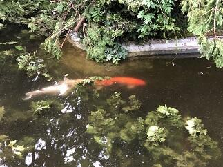
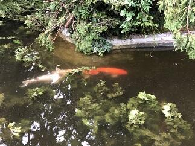 台風15号で被害を受けた東郷池の現状です。倒木は池の中にその枝を入れた状態で倒れています。そんな中でもお陰様で鯉や鮒やメダカは無事でした。
台風15号で被害を受けた東郷池の現状です。倒木は池の中にその枝を入れた状態で倒れています。そんな中でもお陰様で鯉や鮒やメダカは無事でした。池の水の手作り循環濾過装置も無事に動いているので池の水自体はきれいです。鯉たちは元気に泳いでいます。
東郷池クリーン作戦


 東郷池は現在アオコが発生していてグリーンウオーター状態です。せっかく見えていた鯉の泳ぐ姿もわかりにくい状態です。そこで、少しでもアオコを除去して池の水を浄化する作戦を開始しました。対策は、水棲生物による浄化とろ過機によるアオコの除去の２方面作戦です。水棲生物の代表はヒメタニシとホテイアオイです。ヒメタニシは８月30日（金）に50匹を池に放しました。ホテイアオイは９月４日に池に入れました。手作りの池の水の循環濾過装置は濾過材を９月２日から新しくしました。結果が出てくれると良いのですが。
東郷池は現在アオコが発生していてグリーンウオーター状態です。せっかく見えていた鯉の泳ぐ姿もわかりにくい状態です。そこで、少しでもアオコを除去して池の水を浄化する作戦を開始しました。対策は、水棲生物による浄化とろ過機によるアオコの除去の２方面作戦です。水棲生物の代表はヒメタニシとホテイアオイです。ヒメタニシは８月30日（金）に50匹を池に放しました。ホテイアオイは９月４日に池に入れました。手作りの池の水の循環濾過装置は濾過材を９月２日から新しくしました。結果が出てくれると良いのですが。 第74回千葉県合唱コンクール

 本日9月1日（日）に千葉・県民芸術祭～文化でつなぐ千葉のちから～第74回千葉県合唱コンクールの高等学校・大学職場一般部門が千葉県文化会館を会場に開催されました。本校の音楽部も女声合唱で出場しました。演奏曲は課題曲「飛翔ー白鷺」（「内なる遠き」から）（高野喜久雄 詩／高田三郎 曲）自由曲「O VOS OMNES」(おお すべての人よ)「SALVE REGINA」(栄えあれ、女王よ) （2曲ともKOCAR MIKLOS作曲）の3曲でした。声質も音程もすごくまとまってキレイなハーモニーでした。そして、各パートが互いの良さを引き出していて、声もとても良く出ていたと思います。この夏のコンクール出場経験や日々の練習から多くのことを学んだ成果が出ていたと思いました。音楽部の皆さんすばらしい演奏をありがとうございました。
本日9月1日（日）に千葉・県民芸術祭～文化でつなぐ千葉のちから～第74回千葉県合唱コンクールの高等学校・大学職場一般部門が千葉県文化会館を会場に開催されました。本校の音楽部も女声合唱で出場しました。演奏曲は課題曲「飛翔ー白鷺」（「内なる遠き」から）（高野喜久雄 詩／高田三郎 曲）自由曲「O VOS OMNES」(おお すべての人よ)「SALVE REGINA」(栄えあれ、女王よ) （2曲ともKOCAR MIKLOS作曲）の3曲でした。声質も音程もすごくまとまってキレイなハーモニーでした。そして、各パートが互いの良さを引き出していて、声もとても良く出ていたと思います。この夏のコンクール出場経験や日々の練習から多くのことを学んだ成果が出ていたと思いました。音楽部の皆さんすばらしい演奏をありがとうございました。 令和元年度カヌー新人大会
本日8月24日は令和元年度千葉県高等学校新人カヌー大会令和元年度関東高等学校選抜カヌー大会千葉県予選会が香取市黒部川カヌー場で行われました。大会で選考された選手は9月21日、22日に精進湖で行われる関東大会に出場します。レースコンディションとしては、風の影響で波が強く唯でさえ緊張していた初めての公式戦参加の1年生選手には思ったとおりにレース展開ができなかったかもしれません。逆に、主力となった2年生の選手の成長がすばらしく頼もしく見えました。選手の皆さんお疲れ様でした。すべての選手が今回のレースで得た課題を次の試合に向けて明日からの練習で修正していってもらえると思います。
今回も香取市水上スポーツ指導員の皆様にはいつも以上にお世話になりました。本当にありがとうございました。また、保護者の皆様にはいつも応援ありがとうございます。


今回も香取市水上スポーツ指導員の皆様にはいつも以上にお世話になりました。本当にありがとうございました。また、保護者の皆様にはいつも応援ありがとうございます。
千葉県吹奏楽コンクール2019本選大会
 本日８月12日（月）第61回令和元年度千葉県吹奏楽コンクール2019本選大会（高等学校のA部門）が千葉県文化会館を会場に行われました。東関東大会への推薦校が決定される大会です。さすがに予選会を優秀な成績で通過した団体ばかりで、課題曲・自由曲どれもが団体の個性が出ていてどこも素晴らしく感動的な演奏ばかりでした。佐倉高校は演奏順番が1番でプレッシャーがかかるなか、日頃の成果を十分に発揮できたと思います。特に各楽器の個性が曲調のなかで曲の表現とともに十分に引き出された演奏が行われたと思います。素晴らしい演奏をありがとうございました。
本日８月12日（月）第61回令和元年度千葉県吹奏楽コンクール2019本選大会（高等学校のA部門）が千葉県文化会館を会場に行われました。東関東大会への推薦校が決定される大会です。さすがに予選会を優秀な成績で通過した団体ばかりで、課題曲・自由曲どれもが団体の個性が出ていてどこも素晴らしく感動的な演奏ばかりでした。佐倉高校は演奏順番が1番でプレッシャーがかかるなか、日頃の成果を十分に発揮できたと思います。特に各楽器の個性が曲調のなかで曲の表現とともに十分に引き出された演奏が行われたと思います。素晴らしい演奏をありがとうございました。